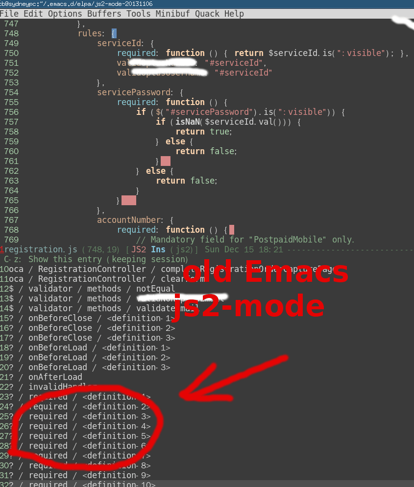

My grub2 configuration
Content of /etc/grub.d/11_windows,
#!/bin/sh -e
echo "# Adding Windows GRUB 2 menu"
cat << EOF
menuentry "Windows XP" {
savedefault
insmod chain
insmod ntfs
set root=(hd0,1)
chainloader +1
}
EOF
/etc/default/grub
# Copyright 1999-2013 Gentoo Foundation
# Distributed under the terms of the GNU General Public License v2
# $Header: /var/cvsroot/gentoo-x86/sys-boot/grub/files/grub.default-2,v 1.4 2013/09/21 18:10:55 floppym Exp $
#
# To populate all changes in this file you need to regenerate your
# grub configuration file afterwards:
# 'grub2-mkconfig -o /boot/grub/grub.cfg'
#
# See the grub info page for documentation on possible variables and
# their associated values.
GRUB_DISTRIBUTOR="Gentoo"
GRUB_DEFAULT=saved
GRUB_SAVEDEFAULT=true
GRUB_HIDDEN_TIMEOUT=0
GRUB_HIDDEN_TIMEOUT_QUIET=true
GRUB_TIMEOUT=10
# Append parameters to the linux kernel command line
GRUB_CMDLINE_LINUX="libata.dma=1"
# Append parameters to the linux kernel command line for non-recovery entries
#GRUB_CMDLINE_LINUX_DEFAULT=""
# Uncomment to disable graphical terminal (grub-pc only)
#GRUB_TERMINAL=console
# The resolution used on graphical terminal.
# Note that you can use only modes which your graphic card supports via VBE.
# You can see them in real GRUB with the command `vbeinfo'.
#GRUB_GFXMODE=640x480
# Path to theme spec txt file.
# The starfield is by default provided with use truetype.
# NOTE: when enabling custom theme, ensure you have required font/etc.
#GRUB_THEME="/boot/grub/themes/starfield/theme.txt"
# Background image used on graphical terminal.
# Can be in various bitmap formats.
#GRUB_BACKGROUND="/boot/grub/mybackground.png"
# Uncomment if you don't want GRUB to pass "root=UUID=xxx" parameter to kernel
#GRUB_DISABLE_LINUX_UUID=true
# Uncomment to disable generation of recovery mode menu entries
#GRUB_DISABLE_RECOVERY=true
Why Emacs is better editor - a case study for javascript developer
UPDATED:
Let's see an example in real life development.
Note
For people who does not get the key points of this article, here are the points:
- Emacs has an embedded javascript interpreter which I extend a little bit.
- Other editors just use external tools or regular expression to do the semantic analysis.
- The difference of above two is bigger than the difference between machine gun and spear.
Problem
I'm maintaining a big javascript file with thousands of lines of legacy code.
My most urgent issue is how to list all the functions in that javascript file and jump to the definition of specific function easily.
The modern enterprise application usually define the javascript function in some complex data structure. So most editors are not good at listing the functions.
To understand what "complex" means, let's check some code from real world application:
$(el.completeRegistrationForm).validate({
ignore: " :hidden",
rules : {
password : {
required : function () { return $(el.password).is(":visible"); }
},
accountNumber : {
required : function () {
return $(el.accountNumber).is(":visible");
},
digits : true
}
// ... I skipped next 200 lines which are similar to above lines
},
messages : {
password: {
required : "Please input a valid password"
},
accountNumber: {
required : "Please provide a valid account number",
digits : "Please enter only digits",
}
// ... I skipped next 200 lines which are similar to above lines
}
});
Most editors like Sublime Text 3 cannot display the javascript functions with meaningful context in this case. All you can see is only a bunch of functions with name "required".:

Solution
Emacs has a js2-mode which is basically a javascript interpreter written in lisp. It's created by Steve Yegge and now maintained by mooz.
Since js2-mode is a interpreter, basically it can do anything you want. The key point is to understand the Abstract Syntax Tree (AST) defined in js2-mode.
Here is my patch to make js2-mode display the list of functions with correct context:
commit 56ed89bf18a6b58fd4620056288ea2ab52bd4d77
Author: Chen Bin <chenbin.sh@gmail.com>
Date: Sun Dec 15 18:18:06 2013 +1100
more hint for orphan function
diff --git a/js2-imenu-extras.el b/js2-imenu-extras.el
index e8e15a5..17bf158 100644
--- a/js2-imenu-extras.el
+++ b/js2-imenu-extras.el
@@ -174,6 +174,39 @@ prefix any functions defined inside the IIFE with the module name."
(js2-imenu-record-module-pattern node)))
t))))
+(defun js2-imenu-get-parent-keyname-list (node)
+ "get the list of keys of parent of node
+for example, for javascript code, {rules:{ password {required: function(){}}}}
+the return will be '(rules password)."
+ (let ((rlt '())
+ (n node))
+ (while (setq n (js2-imenu-parent-prop-node n))
+ (add-to-list 'rlt (js2-prop-node-name (js2-object-prop-node-left n)))
+ )
+ rlt
+ )
+ )
+
+(defun js2-imenu-parent-prop-node (node)
+ "for javascript code: parent-key-name:{ required:function(){} }
+we need know the parent-key-name.
+ step1, 'required:function(){}' is the js2-object-prop-node
+ step2, '{ required:function(){} }' is the js2-object-node
+ step3, 'parent-key-name:{ required:function(){} }' is js2-object-prop-node
+"
+ (let (p2 p3)
+ ;; step 2
+ (setq p2 (js2-node-parent node))
+ ;; step 3
+ (when (and p2 (js2-object-node-p p2))
+ (setq p3 (js2-node-parent p2))
+ (if (and p3 (js2-object-prop-node-p p3))
+ p3
+ )
+ )
+ )
+ )
+
(defun js2-imenu-record-orphan-function (node)
"Record orphan function when it's the value of NODE.
NODE must be `js2-object-prop-node'."
@@ -181,10 +214,15 @@ NODE must be `js2-object-prop-node'."
(let ((fn-node (js2-object-prop-node-right node)))
(unless (and js2-imenu-function-map
(gethash fn-node js2-imenu-function-map))
- (let ((key-node (js2-object-prop-node-left node)))
- (js2-record-imenu-entry fn-node
- (list js2-imenu-other-functions-ns
- (js2-prop-node-name key-node))
+ (let ((key-node (js2-object-prop-node-left node))
+ (parent-prop-node (js2-imenu-parent-prop-node node))
+ mylist
+ )
+ (setq mylist (append (js2-imenu-get-parent-keyname-list node)
+ (list (js2-prop-node-name key-node))
+ ))
+ (add-to-list 'mylist js2-imenu-other-functions-ns)
+ (js2-record-imenu-entry fn-node mylist
(js2-node-abs-pos key-node)))))))
(defun js2-imenu-record-module-pattern (node)
I already submitted the patch to mooz so everyone will enjoy this feature in the future.
Here is the screen shot of emacs in old js2-mode, the UI is based on Imenu Mode and Helm: 
The screen shot after we applying the above patch:

Summary
That's an example of beauty of Emacs.
It gives you freedom and power. You can base your work on the top geeks like Steve Yegge and mooz. Just a few lines of lisp code to kick ass.
Update
My patch is incorporated into js2-mode since version 20140114.
After installing js2-mode, you need paste one line setup into your ~/.emacs,
(js2-imenu-extras-mode)
The UI to display the candidate is from package Helm.
The Helm version should be 20140125.1101 or higher, you can install Helm from MELPA.
After installing Helm, you can use command M-x helm-imenu to show the list of functions to jump to. Here is the screen shot how I use imenu in my hello2.js:

UPDATE: I suggest using counsel-imenu from Counsel instead of Helm.
蚝油生菜做法
- 菜谱
- 油炸蒜末,倒入蚝油(至少4大勺)搅拌,最后放入生菜(半颗),搅拌一下即可,可以最后放盐如果嫌不咸的话
- 生菜用开水烫过沥干,因为其容易出水
- 不要放糖,蚝油本身有甜味了
阿基师的做法
小叮嚀:1.西生菜要集中加熱（顏色才可以保持鮮綠跟脆口）
2.可以利用香菇去蠔油腥味
2.1. 利用香菇去做燴的動作，讓一些物料巴在上頭
2.2. 不要加雞精粉跟糖，蠔油已經有甜度了。
2.3. 蠔油跟豬油一起拌會更香
做法:
1.去除香菇蒂頭，斜刀將香菇切片。
2.起鍋下1茶匙油，爆香香菇片，下蠔油拌炒〈炒過的蠔油有焦糖味在裡面， 味道會更香〉，加入自來高湯〈自來高湯的量，只要抓蠔油鹹度即可〉，小滾一會兒， 讓香菇的甜味煮出來。
3.調太白粉水〈粉1：水3〉，加入適量的太白粉水，加入少許香油，不需攪拌，熄火 〈澱粉會吃油，攪拌的話會膨脹變成一團糊〉。
4.在滾水鍋中加鹽，汆燙西生菜〈菜要最後汆燙〉，加入少許薑末〈薑汁也行，薑可提味，巴在葉片上會更好吃〉汆燙，撈起西生菜瀝乾水份〈因為西生菜很會出水， 一定要徹底瀝乾水份，否則會水水的〉。
5.將蠔油醬汁淋在西生菜上即可。
Screen shot: 
notes on upgrading Gentoo Linux
sudo emerge --update --deep --with-bdeps=y --newuse world
- I get notified that some newer version package is required, so I have to manually install those package and re-run the
emerge world - Some package is gone (libreoffice-bin, for example).
Here is command to manually install package:
sudo ebuild /usr/portage/www-client/firefox-bin/firefox-bin-23.0.ebuild unpack compile install qmerge clean
How to take screen shot for business people efficiently in Emacs
CREATED:
UPDATED:
Tools
| Name | Description | Minimum version |
|---|---|---|
| Org-mode | create org-file which could be converted to odt file | 7.8 |
| scrot | command line tool to take screen shot | any version |
| Libreoffice | convert odt to Microsoft Word | any version |
| xsel | X clipboard tool | any version |
Work flow
Use scrot to screenshot and put its path into clipboard
scrot '%H%M%S-%d_$wx$h.png' -e 'mkdir -p ~/screenshot;mv $f ~/screenshot/;echo ~/screenshot/$f|tr -d \"\\n\"|xsel -ib;'
Create org file and insert path of screen shot
Actually I use below elisp command to do the insertion for me.
(defun insert-file-link-from-clipboard ()
"Make sure the full path of file exist in clipboard. This command will convert
The full path into relative path and insert it as a local file link in org-mode"
(interactive)
(let (str)
(with-temp-buffer
(shell-command
(cond
((eq system-type 'cygwin) "getclip")
((eq system-type 'darwin) "pbpaste")
(t "xsel -ob"))
1)
(setq str (buffer-string)))
;; convert to relative path (relative to current buffer) if possible
(let ((m (string-match (file-name-directory (buffer-file-name)) str) ))
(when m
(if (= 0 m )
(setq str (substring str (length (file-name-directory (buffer-file-name)))))
))
(insert (format "[[file:%s]]" str)))
))
Convert org file into Microsoft Word format
I'm sure this method works even on Windows. But I don't have Windows PC to validate my belief. Libreoffice is required.
Run the command "M-x org-export-as-odt".
Word document is automatically created if you insert below code into your ~/.emacs:
;; This setup is tested on Emacs 24.3 & Emacs 24.4 on Linux/OSX
;; org v7 bundled with Emacs 24.3
(setq org-export-odt-preferred-output-format "doc")
;; org v8 bundled with Emacs 24.4
(setq org-odt-preferred-output-format "doc")
;; BTW, you can assign "pdf" in above variables if you prefer PDF format
;; Only OSX need below setup
(defun my-setup-odt-org-convert-process ()
(interactive)
(let ((cmd "/Applications/LibreOffice.app/Contents/MacOS/soffice"))
(when (and (eq system-type 'darwin) (file-exists-p cmd))
;; org v7
(setq org-export-odt-convert-processes '(("LibreOffice" "/Applications/LibreOffice.app/Contents/MacOS/soffice --headless --convert-to %f%x --outdir %d %i")))
;; org v8
(setq org-odt-convert-processes '(("LibreOffice" "/Applications/LibreOffice.app/Contents/MacOS/soffice --headless --convert-to %f%x --outdir %d %i"))))
))
(my-setup-odt-org-convert-process)
Emacs will find the binary "soffice" from libreoffice to do the conversion.
Tips
If you need page break in exported document, insert below snippet into the org file:
#+ODT: <text:p text:style-name="PageBreak"/>
How to use flyspell in web-mode
Please see http://blog.binchen.org/posts/effective-spell-check-in-emacs.html for solution.

三文鱼炖豆腐做法
用料: 三文鱼、老豆腐、面粉、黑胡椒粒、甜椒、葱、大蒜、姜、松子、香菜、盐、老抽、生抽、糖。
做法：
1: 三文鱼去掉鱼骨，拔出鱼刺，和豆腐切成大小相仿的小块，
并用厨房纸巾稍稍擦干水份，三文鱼块里撒入适量的黑胡椒粒，
放入2勺面粉稍微裹以下;
鱼炖豆腐好吃2字诀-三文鱼炖豆腐
2: 其他材料备好;
鱼炖豆腐好吃2字诀-三文鱼炖豆腐
3: 锅底用姜片擦一遍，放入姜片、三文鱼2面煎黄取出，
再放入豆腐块煎黄;
鱼炖豆腐好吃2字诀-三文鱼炖豆腐
4: 倒入适量老抽上色，生抽、盐、糖、大蒜调味，
一次性倒入足量的开水，大火煮开，中火炖至快干;
鱼炖豆腐好吃2字诀-三文鱼炖豆腐
5: 放入甜椒块翻炒一下，撒入松子、香菜段即可起锅。
鱼炖豆腐好吃2字诀-三文鱼炖豆腐
小牛贴心提示：
1：炖豆腐和鱼，想要好吃，关键要时间，
即是老话所说"千滚的豆腐万滚的鱼";
2：鱼块裹面粉、生姜擦锅都能防止鱼不沾锅;
3：一次性加入足量的开水，中途不要频繁加水。
- 生抽至少两大勺,我放得太少
- 炖得时候我放水太少,一开始就要多放,至少半大碗水
- 鱼和豆腐煎的黄一点,一开始用纸吸干水份较好,否则油到处溅
- 老抽没有了,所以颜色很难看
- 诀窍1,黑胡椒之类的辛香料都是油炸过后才更香
- 诀窍2,如果做汤的话,鱼和豆腐炖的时间越长越好吃,也有营养
另附有三文鱼豆腐汤的做法

Copy file name or full path of file from Emacs dired buffer into system clipboard
Simple, insert below code into your ~/.emacs:
;; {{ copy the file-name/full-path in dired buffer into clipboard
;; `w` => copy file name
;; `C-u 0 w` => copy full path
(defadvice dired-copy-filename-as-kill (after dired-filename-to-clipboard activate)
(with-temp-buffer
(insert (current-kill 0))
(shell-command-on-region (point-min) (point-max)
(cond
((eq system-type 'cygwin) "putclip")
((eq system-type 'darwin) "pbcopy")
(t "xsel -ib")
)))
(message "%s => clipboard" (current-kill 0))
)
It support Cygwin and OSX out of the box. You need install xsel under Linux.
BTW, I suggest installing a clipboard manager like parcellite under Linux to sync the two X clipboards.
番茄鸡蛋汤做法
- 放蒜(可以加姜,葱)大火爆炒,也可以加点老抽
- 放入番茄超出茄红素
- 加水煮,调味放盐糖
- 最后放入打碎鸡蛋,五秒钟后起锅
有人介绍下面也是类似原理,加葱花老抽爆炒,然后放水煮面